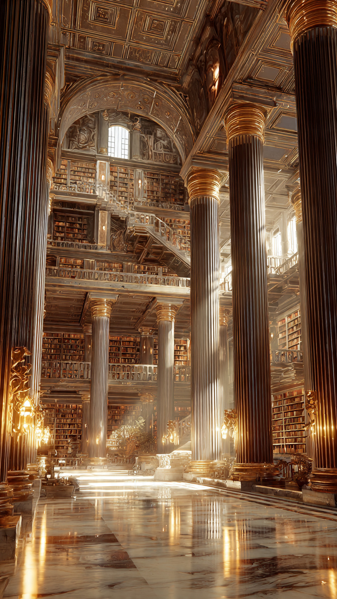
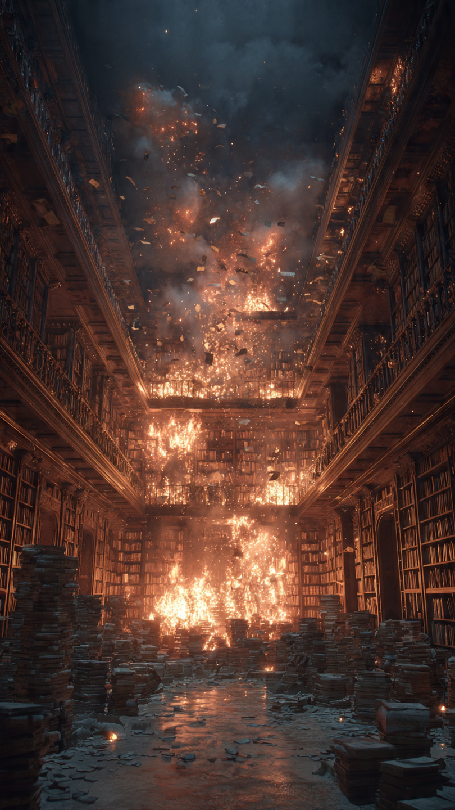

```html id="z8kq2n"
المكتبة التي كان يمكن أن تغيّر تاريخ البشرية لو لم تحترق | قصص تاريخية
```
قبل أكثر من ألفي عام، كانت مدينة الإسكندرية في مصر واحدة من أعظم مدن العالم.
كانت السفن تصل إليها من كل أنحاء البحر المتوسط، محملة بالبضائع والعلماء والكتب.
وفي قلب المدينة، شُيّد مكان لم يكن يشبه أي مكتبة عرفها البشر من قبل.
مكان جمع علوم الحضارات المختلفة تحت سقف واحد.
إنها مكتبة الإسكندرية القديمة.
تأسست المكتبة خلال العصر البطلمي، ويُرجح أنها أُنشئت في عهد بطليموس الأول أو بطليموس الثاني.
ولم يكن هدفها مجرد حفظ الكتب، بل أن تصبح أكبر مركز للعلم والمعرفة في العالم القديم.
كان حكام مصر البطالمة يرسلون وكلاءهم إلى المدن البعيدة لشراء المخطوطات النادرة أو نسخها.
بل إن بعض المصادر التاريخية تذكر أن السفن التي كانت ترسو في ميناء الإسكندرية كانت تُفحص، وإذا وُجدت عليها كتب، تُنسخ في المكتبة قبل إعادتها إلى أصحابها.
ومع مرور السنوات، أصبحت المكتبة تضم مئات الآلاف من لفائف البردي، التي احتوت على علوم الطب، والفلك، والرياضيات، والفلسفة، والأدب، والجغرافيا.
وجاء إليها علماء من مصر، واليونان، وبلاد الرافدين، وغيرها من أنحاء العالم القديم.
وكانوا يعملون معًا على دراسة العلوم وترجمتها وتطويرها.
ولهذا تحولت الإسكندرية إلى واحدة من أهم عواصم المعرفة في التاريخ.
لكن هذا الصرح العظيم لم يدم إلى الأبد.
ففي مرحلة ما من التاريخ، بدأت المكتبة تفقد مكانتها، وتعرضت لأضرار عبر فترات مختلفة.
وحتى اليوم، لا يتفق المؤرخون على سبب اختفائها أو الجهة التي كانت مسؤولة عن تدميرها.
فهل احترقت في حادث واحد؟
أم أنها اندثرت تدريجيًا عبر قرون طويلة؟
هذا ما سنكتشفه في الجزء الثاني.
📷 الصورة رقم 1

على مر السنين، أصبحت قصة احتراق مكتبة الإسكندرية من أكثر القصص تداولًا في التاريخ.
لكن عندما درس المؤرخون المصادر القديمة بدقة، اكتشفوا أن الحقيقة أكثر تعقيدًا مما يظنه كثير من الناس.
فلا توجد وثيقة تاريخية مؤكدة تثبت أن المكتبة دُمِّرت في حادث واحد فقط.
بل تشير الأدلة إلى أنها تعرضت لسلسلة من الأضرار خلال فترات مختلفة.
يرى بعض الباحثين أن أول ضرر كبير أصاب المكتبة كان عام 48 قبل الميلاد، عندما اندلع حريق في ميناء الإسكندرية أثناء الحرب التي شارك فيها يوليوس قيصر.
وتذكر بعض المصادر القديمة أن النيران امتدت إلى مناطق قريبة من الميناء، وربما أتلفت عددًا من المخطوطات.
لكن المؤرخين يختلفون حول حجم هذا الضرر، وهل وصل بالفعل إلى المبنى الرئيسي للمكتبة أم لا.
ومع مرور القرون، تعرضت مدينة الإسكندرية لاضطرابات سياسية وحروب وتغيرات في الحكم.
ويعتقد عدد كبير من المؤرخين أن المكتبة فقدت جزءًا من أهميتها تدريجيًا، ثم تراجعت أنشطتها العلمية مع مرور الزمن.
ولذلك يرى كثير من الباحثين أن اختفاء المكتبة لم يكن نتيجة حريق واحد، بل نتيجة أحداث متتابعة استمرت سنوات طويلة.
ورغم اختلاف الروايات، فإن الجميع يتفق على حقيقة واحدة.
لقد ضاع عدد هائل من الكتب والمخطوطات التي كانت تحتوي على علوم وآداب وفلسفات العالم القديم.
ولا أحد يعرف على وجه الدقة كم كتابًا فُقد، أو كم فكرة علمية اختفت مع تلك المخطوطات.
ولهذا أصبحت مكتبة الإسكندرية رمزًا لأهمية الحفاظ على المعرفة، وللخسارة الكبيرة التي قد تحدث عندما تضيع مصادر العلم.
لكن...
ما الذي بقي من إرث هذه المكتبة؟
وهل انتهت رسالتها فعلًا، أم أن تأثيرها ما زال حاضرًا حتى اليوم؟
هذا ما سنعرفه في الجزء الثالث والأخير.
📷 الصورة رقم 2

رغم أن مكتبة الإسكندرية القديمة اختفت منذ قرون، فإن تأثيرها لم يختفِ أبدًا.
فقد كانت أول مشروع ضخم يجمع المعرفة الإنسانية من حضارات مختلفة في مكان واحد.
وكان العلماء الذين عملوا فيها يترجمون الكتب، ويقارنون بين الأفكار، ويضيفون اكتشافاتهم الخاصة، مما جعلها واحدة من أهم المراكز العلمية في العالم القديم.
ولهذا يعتقد كثير من المؤرخين أن المكتبة ساهمت في حفظ جزء كبير من التراث الإنساني الذي وصل إلينا لاحقًا.
وحتى اليوم، لا يزال السؤال يتردد:
كم كتابًا ضاع مع اختفاء المكتبة؟
لا توجد إجابة دقيقة.
فالتقديرات تختلف من مصدر إلى آخر، كما أن عددًا كبيرًا من المخطوطات لم يُسجل أصلًا.
ولهذا يستحيل معرفة حجم المعرفة التي فقدها العالم.
وربما كانت بين تلك اللفائف كتبٌ في الطب أو الفلك أو الرياضيات كان من الممكن أن تغيّر فهمنا للتاريخ لو بقيت محفوظة.
لكن هذا يبقى مجرد احتمال، وليس حقيقة مؤكدة.
وفي عام 2002، افتُتحت مكتبة الإسكندرية الجديدة بالقرب من موقع المدينة التاريخية.
ورغم أنها ليست امتدادًا مباشرًا للمكتبة القديمة، فإنها أُنشئت لتكون رمزًا لاستمرار رسالة العلم والمعرفة، وتضم ملايين الكتب، ومتاحف، ومراكز أبحاث، وقاعات ثقافية تستقبل الزوار من مختلف أنحاء العالم.
وبذلك عادت الإسكندرية مرة أخرى لتكون مدينة تحتفي بالعلم والثقافة.
إن قصة مكتبة الإسكندرية ليست مجرد قصة مبنى قديم.
بل هي تذكير بقيمة المعرفة، وبأن الحضارات تُبنى بالعلم كما تُبنى بالقوة.
ولهذا بقي اسمها حيًا في كتب التاريخ، وأصبحت رمزًا عالميًا لأهمية حفظ التراث الإنساني، حتى لا تضيع أفكار الأجيال كما ضاعت آلاف المخطوطات قبل أكثر من ألفي عام.
📚🏛️ انتهت القصة 🏛️📚